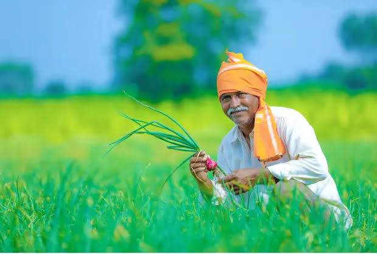
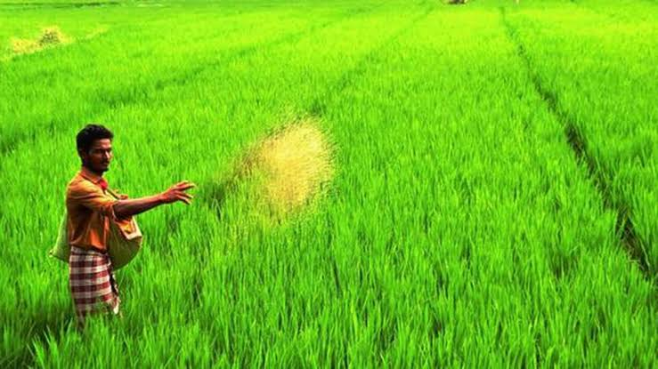
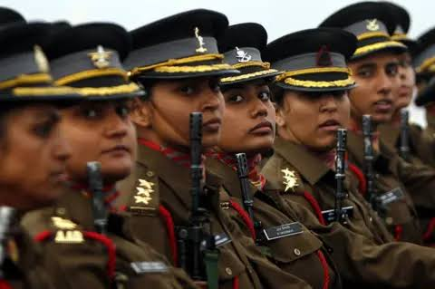
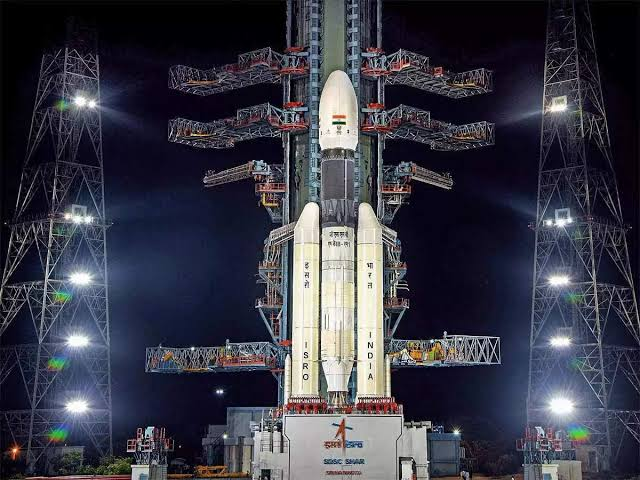

The history of agriculture in India dates back to the Neolithic period. India ranks second worldwide in farm outputs. As per the Indian economic survey 2020 -21, agriculture employed more than 50% of the Indian workforce and contributed 20.2% to the country's GDP. In 2016, agriculture and allied sectors like animal husbandry, forestry and fisheries accounted for 17.5% of the GDP (gross domestic product) with about 41.49% of the workforce in 2020. India ranks first in the world with highest net cropped area followed by US and China. The economic contribution of agriculture to India's GDP is steadily declining with the country's broad-based economic growth. Still, agriculture is demographically the broadest economic sector and plays a significant role in the overall socio-economic fabric of India. The total agriculture commodities export was US$3.50 billion in March - June 2020. India exported $38 billion worth of agricultural products in 2013, making it the seventh-largest agricultural exporter worldwide and the sixth largest net exporter.Most of its agriculture exports serve developing and least developed nations. Indian agricultural/horticultural and processed foods are exported to more than 120 countries, primarily to Japan, Southeast Asia, SAARC countries, the European Union and the United States.  Pesticides and fertilizers used in Indian agriculture have helped increase crop productivity, but their unregulated and excessive use has caused different ecosystem and fatal health problems. Several studies published between 2011 and 2020 attribute 45 different types of cancers afflicting rural farm workers in India to pesticide usage. The chemicals have been shown to cause DNA damage, hormone disruption, and lead to a weakened immune system. Occupational exposure to pesticides has been identified as a major trigger of the development of cancer. The principal classes of pesticides investigated in relation to their role in intoxication and cancer were insecticides, herbicides, and fungicides. Punjab, a state in India, utilises the highest amount of chemical fertilizers in the country. Many of the pesticides sprayed on the state�s crops are classified as class I by the World Health Organization because of their acute toxicity and are banned in places around the world, including Europe.
Definition of farmer Indian farmers are people who grow crops as a profession. Various government estimates (Census, Agricultural Census, National Sample Survey assessments, and Periodic Labour Force Surveys) give a different number of farmers in the country ranging from 37 million to 118 million as per the different definitions. Some definitions take in to account the number of holdings as compared to the number of farmers. Other definitions take into account possession of land, while others try to delink land ownership from the definition of a farmer. Other terms also used include 'cultivator'.
As per the 2014 FAO world agriculture statistics India is the world's largest producer of many fresh fruits like banana, mango, guava, papaya, lemon and vegetables like chickpea, okra and milk, major spices like chili pepper, ginger, fibrous crops such as jute, staples such as millets and castor oil seed. India is the second largest producer of wheat and rice, the world's major food staples. India is currently the world's second largest producer of several dry fruits, agriculture-based textile raw materials, roots and tuber crops, pulses, farmed fish, eggs, coconut, sugarcane and numerous vegetables. India is ranked under the world's five largest producers of over 80% of agricultural produce items, including many cash crops such as coffee and cotton, in 2010. India is one of the world's five largest producers of livestock and poultry meat, with one of the fastest growth rates, as of 2011[update]. One report from 2008 claimed that India's population is growing faster than its ability to produce rice and wheat.[20] While other recent studies claim that India can easily feed its growing population, plus produce wheat and rice for global exports, if it can reduce food staple spoilage/wastage, improve its infrastructure and raise its farm productivity like those achieved by other developing countries such as Brazil and China. India exported $39 billion worth of agricultural products in 2013, making it the seventh largest agricultural exporter worldwide, and the sixth largest net exporter. This represents explosive growth, as in 2004 net exports were about $5 billion. India is the fastest growing exporter of agricultural products over a 10-year period, its $39 billion of net export is more than double the combined exports of the European Union (EU-28). It has become one of the world's largest supplier of rice, cotton, sugar and wheat. India exported around 2 million metric tonnes of wheat and 2.1 million metric tonnes of rice in 2011 to Africa, Nepal, Bangladesh and other regions around the world. India has shown a steady average nationwide annual increase in the mass-produced per hectare for some agricultural items, over the last 60 years. These gains have come mainly from India's green revolution, improving road and power generation infrastructure, knowledge of gains and reforms.Despite these recent accomplishments, agriculture has the potential for major productivity and total output gains, because crop yields in India are still just 30% to 60% of the best sustainable crop yields achievable in the farms of developed and other developing countries. Additionally, post harvest losses due to poor infrastructure and unorganised retail, caused India to experience some of the highest food losses in the world.
History Vedic literature provides some of the earliest written record of agriculture in India. Rigveda hymns, for example, describes ploughing, fallowing, irrigation, fruit and vegetable cultivation. Other historical evidence suggests rice and cotton were cultivated in the Indus Valley, and ploughing patterns from the Bronze Age have been excavated at Kalibangan in Rajasthan. Bhumivargaha, an Indian Sanskrit text, suggested to be 2500 years old, classifies agricultural land into 12 categories: urvara (fertile), ushara (barren), maru (desert), aprahata (fallow), shadvala (grassy), pankikala (muddy), jalaprayah (watery), kachchaha (contiguous to water), sharkara (full of pebbles and pieces of limestone), sharkaravati (sandy), nadimatruka (watered from a river), and devamatruka (rainfed). Some archaeologists believe that rice was a domesticated crop along the banks of the river Ganges in the sixth millennium BC. So were species of winter cereals (barley, oats, and wheat) and legumes (lentil and chickpea) grown in northwest India before the sixth millennium BC.[citation needed] Other crops cultivated in India 3000 to 6000 years ago, include sesame, linseed, safflower, mustard, castor, mung bean, black gram, horse gram, pigeon pea, field pea, grass pea (khesari), fenugreek, cotton, jujube, grapes, dates, jack fruit, mango, mulberry, and black plum[citation needed]. Indians might have domesticated buffalo (the river type) 5000 years ago. Vedic literature provides some of the earliest written record of agriculture in India. Rigveda hymns, for example, describes ploughing, fallowing, irrigation, fruit and vegetable cultivation. Other historical evidence suggests rice and cotton were cultivated in the Indus Valley, and ploughing patterns from the Bronze Age have been excavated at Kalibangan in Rajasthan. Bhumivargaha, an Indian Sanskrit text, suggested to be 2500 years old, classifies agricultural land into 12 categories: urvara (fertile), ushara (barren), maru (desert), aprahata (fallow), shadvala (grassy), pankikala (muddy), jalaprayah (watery), kachchaha (contiguous to water), sharkara (full of pebbles and pieces of limestone), sharkaravati (sandy), nadimatruka (watered from a river), and devamatruka (rainfed). Some archaeologists believe that rice was a domesticated crop along the banks of the river Ganges in the sixth millennium BC. So were species of winter cereals (barley, oats, and wheat) and legumes (lentil and chickpea) grown in northwest India before the sixth millennium BC.[citation needed] Other crops cultivated in India 3000 to 6000 years ago, include sesame, linseed, safflower, mustard, castor, mung bean, black gram, horse gram, pigeon pea, field pea, grass pea (khesari), fenugreek, cotton, jujube, grapes, dates, jack fruit, mango, mulberry, and black plum[citation needed]. Indians might have domesticated buffalo (the river type) 5000 years ago.
Indian agriculture after independence Despite some stagnation during the later modern era the independent Republic of India was able to develop a comprehensive agricultural programme. In the years since its independence, India has made immense progress towards food security. Indian population has tripled, and food-grain production more than quadrupled. There has been a substantial increase in available food-grain per capita. Before the mid-1960s, India relied on imports and food aid to meet domestic requirements. However, two years of severe drought in 1965 and 1966 convinced India to reform its agricultural policy and that it could not rely on foreign aid and imports for food security. India adopted significant policy reforms focused on the goal of food grain self-sufficiency. This ushered in India's Green Revolution. It began with the decision to adopt superior yielding, disease resistant wheat varieties in combination with better farming knowledge to improve productivity. The state of Punjab led India's green revolution and earned the distinction of being the country's breadbasket.  The initial increase in production was centred on the irrigated areas of the states of Punjab, Haryana and western Uttar Pradesh. With the farmers and the government officials focusing on farm productivity and knowledge transfer, India's total food grain production soared. A hectare of Indian wheat farm that produced an average of 0.8 tonnes in 1948, produced 4.7 tonnes of wheat in 1975 from the same land. Such rapid growth in farm productivity enabled India to become self-sufficient by the 1970s. It also empowered the smallholder farmers to seek further means to increase food staples produced per hectare. By 2000, Indian farms were adopting wheat varieties capable of yielding 6 tonnes of wheat per hectare. India ranks 74 out of 113 major countries in terms of food security index. India's agricultural economy is undergoing structural changes. Between 1970 and 2011, the GDP share of agriculture has fallen from 43% to 16%. This isn't because of reduced importance of agriculture or a consequence of agricultural policy; rather, it is largely due to the rapid economic growth in services, industrial output, and non-agricultural sectors in India between 2000 and 2010. India has seen a huge growth in cooperative societies, mainly in the farming sector, since 1947 when the country gained independence from Britain. The country has networks of cooperatives at the local, regional, state and national levels that assist in agricultural marketing. The commodities that are mostly handled are food grains, jute, cotton, sugar, milk, fruit and nuts Support by the state government led to more than 25,000 cooperatives being set up by the 1990s in the state of Maharashtra.
Education in India is primarily managed by the state-run public education system, which falls under the command of the government at three levels: central, state and local. Under various articles of the Indian Constitution and the Right of Children to Free and Compulsory Education Act, 2009, free and compulsory education is provided as a fundamental right to children aged 6 to 14. The approximate ratio of the total number of public schools to private schools in India is 10:3. Education in India covers different levels and types of learning, such as early childhood education, primary education, secondary education, higher education, and vocational education. It varies significantly according to different factors, such as location (urban or rural), gender, caste, religion, language, and disability. Education in India faces many challenges and opportunities, such as improving access and quality,reducing disparities and dropouts, increasing enrolment and completion rates, enhancing learning outcomes and employability, strengthening governance and accountability, promoting innovation and technology, and addressing the impact of COVID-19 pandemic. It is influenced by various policies and programmes at the national and state levels, such as the National Education Policy 2020, the Samagra Shiksha Abhiyan, the Rashtriya Madhyamik Shiksha Abhiyan, the Midday Meal Scheme, the Beti Bachao Beti Padhao Scheme, and the National Digital Education Architecture. It is also supported by various stakeholders and partners, such as UNICEF, UNESCO, World Bank, civil society organizations, academic institutions, private sector entities, and media outlets.
Up until 1976, under the Indian constitution, school education was a state subject; states possessed full jurisdiction over making and implementing education policies. After the 42nd Amendment of the Constitution of India was passed in 1976, education fell under the concurrent list. This allowed the central government to recommend education policies and programmes, even if state governments continued to wield extensive autonomy in implementing these programmes. In a country as large as India, now with 28 states and eight union territories, this has created vast differences between states in terms of their policies, plans, programmes and initiatives relating to school education. Periodically, national policy frameworks are created to guide states in their creation of state-level programmes and policies. State governments and local government bodies manage the majority of primary and upper primary schools and the number of government-managed elementary schools is growing. Simultaneously the number and proportion managed by private bodies is growing. In 2005-6 83.13% of schools offering elementary education (Grades 1�8) were managed by government and 16.86% of schools were under private management (excluding children in unrecognised schools, schools established under the Education Guarantee Scheme and in alternative learning centres). Of those schools managed privately, one third are 'aided' and two thirds are 'unaided'. Enrolment in Grades 1�8 is shared between government and privately managed schools in the ratio 73:27. However, in rural areas this ratio is higher (80:20) and in urban areas much lower (36:66). In the 2011 Census, about 73% of the population was literate, with 81% for males and 65% for females. National Statistical Commission surveyed literacy to be 77.7% in 2017�18, 84.7% for male and 70.3% for female. This compares to 1981 when the respective rates were 41%, 53% and 29%. In 1951 the rates were 18%, 27% and 9%. India's improved education system is often cited as one of the main contributors to its economic development. Much of the progress, especially in higher education and scientific research, has been credited to various public institutions. While enrolment in higher education has increased steadily over the past decade, reaching a Gross Enrolment Ratio (GER) of 26.3% in 2019, there still remains a significant distance to catch up with tertiary education enrolment levels of developed nations, a challenge that will be necessary to overcome in order to continue to reap a demographic dividend from India's comparatively young population.[citation needed]
As per the Annual Status of Education Report (ASER) 2012, 96.5% of all rural children between the ages of 6�14 were enrolled in school. This is the fourth annual survey to report enrolment above 96%. India has maintained an average enrolment ratio of 95% for students in this age group from year 2007 to 2014. As an outcome the number of students in the age group 6�14 who are not enrolled in school has come down to 2.8% in the academic year 2018 (ASER 2018). Another report from 2013 stated that there were 229 million students enrolled in different accredited urban and rural schools of India, from Class I to XII, representing an increase of 2.3 million students over 2002 total enrolment, and a 19% increase in girl's enrolment. While quantitatively India is inching closer to universal education, the quality of its education has been questioned particularly in its government run school system. While more than 95 per cent of children attend primary school, just 40 per cent of Indian adolescents attend secondary school (Grades 9�12). Since 2000, the World Bank has committed over $2 billion to education in India. Some of the reasons for the poor quality include absence of around 25% of teachers every day. States of India have introduced tests and education assessment system to identify and improve such schools.The Human Rights Measurement Initiative finds that India is achieving only 79.0% of what should be possible at its level of income for the right to education.
Early education in India commenced under the supervision of a guru or preceptor after initiation. The education was delivered through Gurukula. The relationship between the Guru and his Shishya (students /disciples) was a very important part of education. Taxila is an example of an ancient higher learning institute in ancient India, possibly dating as far back as the 8th century BCE. However, it is debatable whether or not this can be regarded as a university in modern day terms, since the teachers living there may not have had official membership of particular colleges, and there did not seem to have existed purpose-built lecture halls and residential quarters in Taxila, in contrast to the later Nalanda university in eastern India. Nalanda was the oldest university-system of education in the world in the modern sense of university, and all subjects there were taught in the Pali language. G.L. Prendergast, a member of the Governor's Council in Bombay Presidency, recorded the following about indigenous schools on 27 June 1821:
Since the country's independence in 1947, the Indian government sponsored a variety of programmes to address the low literacy rate in both rural and urban India. Maulana Abul Kalam Azad, India's first Minister of Education, envisaged strong central government control over education throughout the country, with a uniform educational system. The Union government established the University Education Commission (1948�1949), the Secondary Education Commission (1952�1953), University Grants Commission and the Kothari Commission (1964�66) to develop proposals to modernise India's education system. The Resolution on Scientific Policy was adopted by the government of Jawaharlal Nehru, India's first Prime Minister. The Nehru government sponsored the development of high-quality scientific education institutions such as the Indian Institutes of Technology. In 1961, the Union government formed the National Council of Educational Research and Training (NCERT) as an autonomous organisation that would advise both the Union and state governments on formulating and implementing education policies.
When COVID-19 shut down schools and colleges all over the India, teachers and students had to adjust fast to keep learning going. Online education quickly became really popular and important, helping lots of people keep up with their studies. This change didn't just make sure learning didn't stop; it also showed how great online learning can be. Open schooling refers to a system of education that allows individuals to pursue their education through flexible and exensible learning methods. It is primarily targeted towards students who are unable to attend regular schools due to various reasons, such as work commitments, financial constraints, or other personal circumstances. The National Institute of Open Schooling (NIOS) is the largest open schooling system in India, operating under the aegis of the Indian Ministry of Education. NIOS offers various academic and vocational courses at the secondary (10th grade) and senior secondary (12th grade) levels. It follows a learner-centric approach and provides education through open and distance learning methods.
The Indian Army is the land-based branch and largest component of the Indian Armed Forces. The President of India is the Supreme Commander of the Indian Army, and its professional head is the Chief of Army Staff (COAS). The Indian Army was established on 1 April 1895 alongside the long established presidency armies of the East India Company, which too were absorbed into it in 1903. Some princely states maintained their own armies which formed the Imperial Service Troops which, along with the Indian Army formed the land component of the Armed Forces of the Crown of India, responsible for the defence of the Indian Empire.The Imperial Service Troops were merged into the Indian Army after independence. The units and regiments of the Indian Army have diverse histories and have participated in several battles and campaigns around the world, earning many battle and theatre honours before and after Independence.The primary mission of the Indian Army is to ensure national security and national unity, to defend the nation from external aggression and internal threats, and to maintain peace and security within its borders. It conducts humanitarian rescue operations during natural calamities and other disturbances, such as Operation Surya Hope, and can also be requisitioned by the government to cope with internal threats. It is a major component of national power, alongside the Indian Navy and the Indian Air Force. The army has been involved in four wars with neighbouring Pakistan, one with China and one with Afghanistan. Other major operations undertaken by the army include Operation Vijay, Operation Meghdoot, and Operation Cactus. The army has conducted large peacetime exercises such as Operation Brasstacks and Exercise Shoorveer, and it has also been an active participant in numerous United Nations peacekeeping missions. The Indian Army was a major force in the First and Second World Wars, particularly in the Western Front and the Middle Eastern theatre during World War I, and the South-East Asian Theatre and the East African and North African campaigns during World War II.The Indian Army is operationally and geographically divided into seven commands, with the basic field formation being a division. Below the division level are permanent regiments that are responsible for their own recruiting and training. The army is an all-volunteer force and comprises more than 80% of the country's active defence personnel. It is the largest standing army in the world,with 1,237,117 active troops and 960,000 reserve troops. The army has embarked on an infantry modernisation program known as Futuristic Infantry Soldier As a System (F-INSAS), and is also upgrading and acquiring new assets for its armoured, artillery, and aviation branches.
Until the independence of India, the "Indian Army" was a British-commanded force defined as "the force recruited locally and permanently based in India, together with its expatriate British officers"; the "British Army in India" referred to British Army units posted to India for a tour of duty. The "Army of India" meant the combined Indian Army and the British Army in India. Upon the Partition of India and Indian independence in 1947,
 four of the ten Gurkha regiments were transferred to the British Army. The rest of the Indian Army was divided between the newly created Union of India and the Dominion of Pakistan. The Punjab Boundary Force, which had been formed to help police Punjab during the partition period, was disbanded. Headquarters Delhi and the East Punjab Command were formed to administer the area. The departure of virtually all senior British officers following independence, and their replacement by Indian officers, meant many of the latter held acting ranks several ranks above their substantive ones. For instance, S. M. Shrinagesh, the ground-forces commander of Indian forces during the first Indo-Pak War of 1947�49 (and the future third COAS), was first an acting major-general and then an acting lieutenant-general during the conflict while holding the substantive rank of major, and only received a substantive promotion to lieutenant-colonel in August 1949. Gopal Gurunath Bewoor, the future ninth COAS, was an acting colonel at his promotion to substantive major from substantive captain in 1949, while future Lieutenant General K. P. Candeth was an acting brigadier (substantive captain) at the same time. In April 1948, the former Viceroy's Commissioned Officers (VCO) were re-designated Junior Commissioned Officers, while the former King's Commissioned Indian Officers (KCIO) and Indian Commissioned Officers (ICO), along with the former Indian Other Ranks (IOR), were respectively re-designated as Officers and Other Ranks.
Army Day is celebrated on 15 January every year in India, in recognition of Lieutenant General K. M. Cariappa's taking over as the first "Indian" Chief of the Army Staff and Commander-in-Chief, Indian Army from General Sir Roy Bucher, on 15 January 1949. With effect from 26 January 1950, the date India became a republic, all active-duty Indian Army officers formerly holding the King's Commission were recommissioned and confirmed in their substantive ranks.
four of the ten Gurkha regiments were transferred to the British Army. The rest of the Indian Army was divided between the newly created Union of India and the Dominion of Pakistan. The Punjab Boundary Force, which had been formed to help police Punjab during the partition period, was disbanded. Headquarters Delhi and the East Punjab Command were formed to administer the area. The departure of virtually all senior British officers following independence, and their replacement by Indian officers, meant many of the latter held acting ranks several ranks above their substantive ones. For instance, S. M. Shrinagesh, the ground-forces commander of Indian forces during the first Indo-Pak War of 1947�49 (and the future third COAS), was first an acting major-general and then an acting lieutenant-general during the conflict while holding the substantive rank of major, and only received a substantive promotion to lieutenant-colonel in August 1949. Gopal Gurunath Bewoor, the future ninth COAS, was an acting colonel at his promotion to substantive major from substantive captain in 1949, while future Lieutenant General K. P. Candeth was an acting brigadier (substantive captain) at the same time. In April 1948, the former Viceroy's Commissioned Officers (VCO) were re-designated Junior Commissioned Officers, while the former King's Commissioned Indian Officers (KCIO) and Indian Commissioned Officers (ICO), along with the former Indian Other Ranks (IOR), were respectively re-designated as Officers and Other Ranks.
Army Day is celebrated on 15 January every year in India, in recognition of Lieutenant General K. M. Cariappa's taking over as the first "Indian" Chief of the Army Staff and Commander-in-Chief, Indian Army from General Sir Roy Bucher, on 15 January 1949. With effect from 26 January 1950, the date India became a republic, all active-duty Indian Army officers formerly holding the King's Commission were recommissioned and confirmed in their substantive ranks.
Following the 14 February 2019 Pulwama attack in Jammu and Kashmir, which killed 40 Indian Central Reserve Police Force personnel. Responsibility for the attack was claimed by a Pakistan-based militant group, Jaish-e-Mohammed.India blamed Pakistan for the attack and promised a robust response, while the latter condemned the attack and denied having any connection to it.After over a month long skirmishes, both Indian Prime Minister of India Narendra Modi and Pakistan Prime Minister Imran Khan of Pakistan agreed on a peace offer on 22 March 2019 ending hostilities and vowed to fight against terrorism together.
Mission and doctrine Initially, the army's main objective was to defend the nation's frontiers. However, over the years, the army has also taken up the responsibility of providing internal security, especially against insurgencies in Kashmir and Northeast India. Currently, the army is also looking at enhancing its special forces capabilities.  With India's increasing international role, and the requirement to protect its interests in far-off countries becoming important, the Indian Army and the Indian Navy are jointly planning to set up a marine brigade.The current combat doctrine of the Indian Army is based on effectively utilising holding formations and strike formations. In the case of an attack, the holding formations would contain the enemy and strike formations would counter-attack to neutralise enemy forces. In the case of an Indian attack, the holding formations would pin enemy forces down, whilst the strike formations would attack at a point of India's choosing. The Indian Army is large enough to devote several corps to the strike role.
The Indian Independence Movement was a series of historic events in South Asia with the ultimate aim of ending British colonial rule. It lasted until 1947, when the Indian Independence Act 1947 was passed. The first nationalistic movement for Indian independence emerged in the Province of Bengal. It later took root in the newly formed Indian National Congress with prominent moderate leaders seeking the right to appear for Indian Civil Service examinations in British India, as well as more economic rights for natives. The first half of the 20th century saw a more radical approach towards self-rule. The stages of the independence struggle in the 1920s were characterised by the leadership of Mahatma Gandhi and Congress's adoption of Gandhi's policy of non-violence and civil disobedience. Some of the leading followers of Gandhi's ideology were Jawaharlal Nehru, Vallabhbhai Patel, Abdul Ghaffar Khan, Maulana Azad, and others. Intellectuals such as Rabindranath Tagore, Subramania Bharati, and Bankim Chandra Chattopadhyay spread patriotic awareness. Female leaders like Sarojini Naidu, Vijaya Lakshmi Pandit, Pritilata Waddedar, and Kasturba Gandhi promoted the emancipation of Indian women and their participation in the freedom struggle. The Indian independence movement was in constant ideological evolution. Essentially anti-colonial, it was supplemented by visions of independent, economic development with a secular, democratic, republican, and civil-libertarian political structure. After the 1930s, the movement took on a strong socialist orientation. It culminated in the Indian Independence Act 1947, which ended Crown suzerainty and partitioned British India into the Dominion of India and the Dominion of Pakistan. On 26 January 1950, the Constitution of India established the Republic of India. Pakistan adopted its first constitution in 1956. In 1971, East Pakistan declared its own independence as Bangladesh. The first European to reach India via the Atlantic Ocean was the Portuguese explorer Vasco da Gama, who reached Calicut in 1498 in search of spice. Just over a century later, the Dutch and English established trading outposts on the Indian subcontinent, with the first English trading post set up at Surat in 1613.
Rise of Indian nationalism The Hindu faction of the Independence movement was led by Nationalist leader Lokmanya Tilak, who was regarded as the "father of Indian Unrest" by the British. Along with Tilak were leaders like Gopal Krishna Gokhale , who was the inspiration, political mentor and role model of Mahatma Gandhi and inspired several other freedom activists. Nationalistic sentiments among Congress members led to a push to be represented in the bodies of government, as well as to have a say in the legislation and administration of India. Congressmen saw themselves as loyalists, but wanted an active role in governing their own country, albeit as part of the Empire. This trend was personified by Dadabhai Naoroji, who went as far as contesting, successfully, an election to the House of Commons of the United Kingdom, becoming its first Indian member. Dadabhai Naoroji was the first Indian nationalist to embrace Swaraj as the destiny of the nation. Bal Gangadhar Tilak deeply opposed a British education system that ignored and defamed India's culture, history, and values. He resented the denial of freedom of expression for nationalists, and the lack of any voice or role for ordinary Indians in the affairs of their nation. For these reasons, he considered Swaraj as the natural and only solution. His popular sentence "Swaraj is my birthright, and I shall have it" became the source of inspiration for Indians. The Ghadar Party was formed overseas in 1913 to fight for the Independence of India with members coming from the United States and Canada, as well as Shanghai, Hong Kong, and Singapore.Members of the party aimed for Hindu, Sikh, and Muslim unity against the British.
In colonial India, the All India Conference of Indian Christians (AICIC), which was founded in 1914, played a role in the Indian independence movement, advocating for swaraj and opposing the partition of India.The AICIC also was opposed to separate electorates for Christians, believing that the faithful "should participate as common citizens in the one common, national political system". The All India Conference of Indian Christians and the All India Catholic Union formed a working committee with M. Rahnasamy of Andhra University serving as president and B.L. Rallia Ram of Lahore serving as general secretary. In its meeting on 16 and 17 April 1947, the joint committee prepared a 13-point memorandum that was sent to the Constituent Assembly of India, which asked for religious freedom for both organisations and individuals; this came to be reflected in the Constitution of India.The temperance movement in India became aligned with Indian nationalism under the direction of Mahatma Gandhi, who saw alcohol as a foreign importation to the culture of the subcontinent.
Indian Space Research Organisation (ISRO is India's national space agency. It operates as the principal research and development arm of the Department of Space , which is directly overseen by the Prime Minister of India, with the Chairman of ISRO also serving as the chief executive of the DoS. ISRO has the world's largest constellation of remote-sensing satellites and operates the GAGAN and IRNSS (NavIC) satellite navigation systems. It has sent three missions to the Moon and one to Mars. ISRO is primarily responsible for space-based operations, space exploration, international space cooperation and the development of related technologies.  ISRO is one of the six government space agencies in the world that possess full launch capabilities, the ability to deploy cryogenic engines, the ability to launch extraterrestrial missions and the ability to operate a large fleet of artificial satellites.ISRO is also one of only four governmental space agencies in the world to have soft landing (unmanned) capabilities.
Goals and objectives As the national space agency of India, ISRO's purpose is the pursuit of all space-based applications such as research, reconnaissance, and communications. It undertakes the design and development of space rockets and satellites, and undertakes explores upper atmosphere and deep space exploration missions. ISRO has also incubated technologies in India's private space sector, boosting its growth.On the topic of the importance of a space programme to India as a developing nation, Vikram Sarabhai as INSCOPAR chair said in 1969:
The former president of India and chairman of DRDO, A. P. J. Abdul Kalam, said:
Future projects ISRO is developing and operationalising more powerful and less pollutive rocket engines so it can eventually develop much heavier rockets. It also plans km above earth where astronauts can stay for 15�20 days. The time frame is 5�7 years after Gaganyaan, he stated. to develop electric and nuclear propulsion for satellites and spacecraft to reduce their weight and extend their service lives. Long-term plans may include crewed landings on Moon and other planets as well.